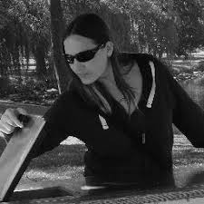

The Play at Nottingham (PAN) Special Interest Group consists of a group of researchers, designers, and scholars dedicated to exploring and advancing the many dimensions of game design and play. While our interests are diverse, our members share a strong focus on the human–computer interaction (HCI) aspects of play, including explorations of playful interactions with digital systems, serious games to represent socio-technical systems, educate players and influence behaviours, how design choices influence behaviour and engagement and explorations of methodological approaches to game design and evaluation.
The SIG serves as a collaborative community for sharing research, developing new ideas, and fostering interdisciplinary connections. We host discussions, workshops, and events that support both emerging and established researchers who are passionate about games as a socio-technical and creative domain.
PAN SIG aims to act as an international hub for research that explores games and play through human–computer interaction perspectives. In doing so, PAN seeks to foster interdisciplinary collaboration, support methodological and theoretical exchange, and create opportunities for academics, early-career researchers and doctoral students working at the intersection of HCI and games.
The SIG aims to advance research agendas around play, interaction, game design, including the development and study of serious games, speculative and future-oriented game practices, and the use of games as visualisation and sense-making tools. It facilitates knowledge sharing and builds connections between academic research, industry practice, and the wider cultural and societal contexts of games and play.
Through these activities, PAN strengthens the visibility of the Mixed Reality Lab, the School of Computer Science, the VIP Studio, and the University of Nottingham as key contributors within a global network of HCI and games researchers.
Martin Flintham
Joe Marshall
Kevin Glover

Teresa Castle-Green
Paul Tennent